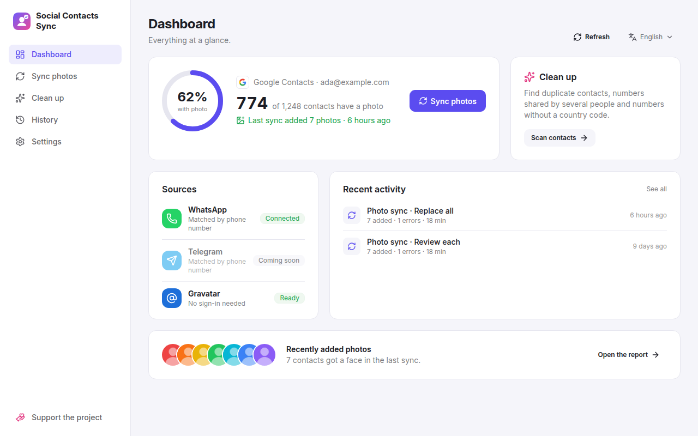
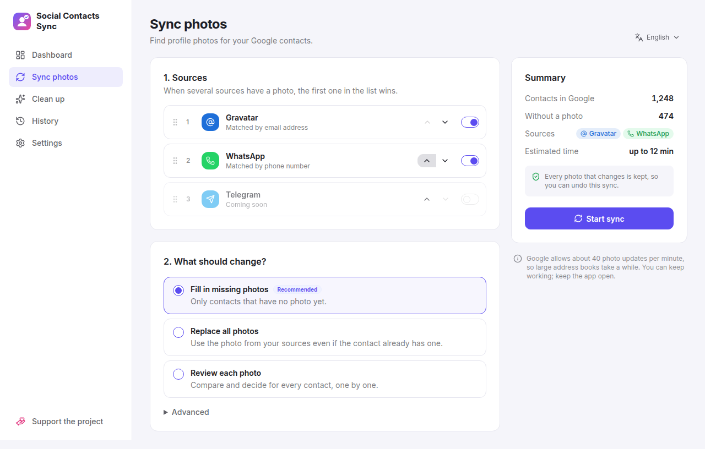
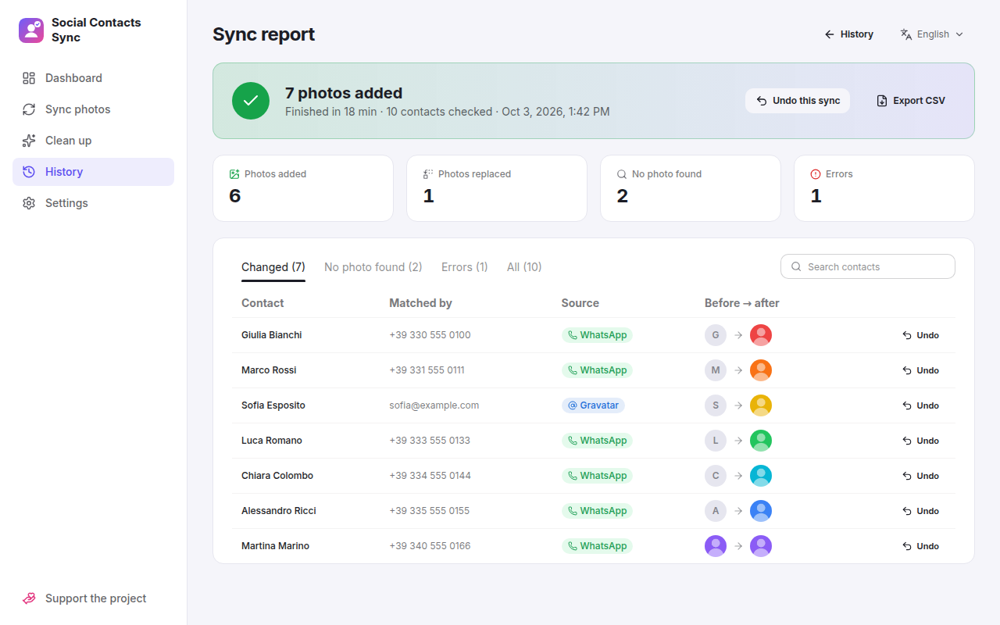
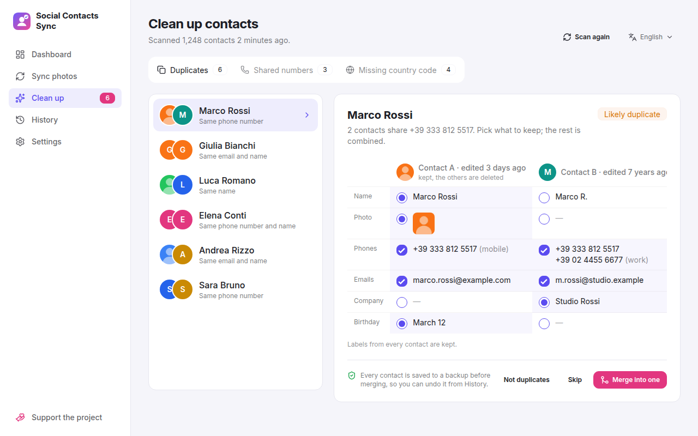
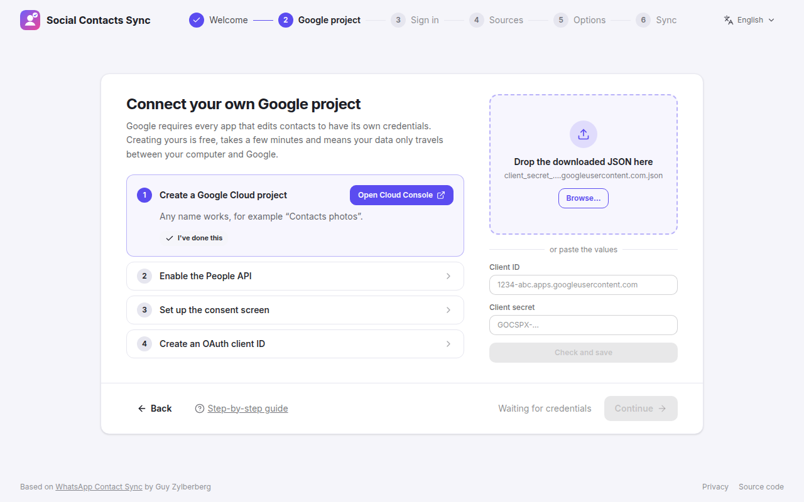

Projects / Social Contacts Sync
Public beta, v0.1.0-beta.1. Open source.
Social ContactsSync
Give every contact a face. A desktop app that fills Google Contacts with your contacts' profile photos from WhatsApp and Gravatar, and tidies up duplicates on the way.
What it is
Most of the people in my phone have a WhatsApp photo, and in Google Contacts they are all coloured circles with a letter. Social Contacts Sync matches each Google contact to its WhatsApp account by phone number, and to Gravatar by email address, and puts the photo on the contact.
It runs on your own computer: the app starts a small local server and opens it in its window, so your contacts only travel between your computer, Google and WhatsApp. Windows, Linux and macOS, in English and Italian, light or dark.
It grew out of WhatsApp Contact Sync by Guy Zylberberg, which syncs WhatsApp photos from a web page. This fork adds the desktop app, more sources and the clean-up tools, and keeps his licence.

Features
- Photos from your sources
- WhatsApp, matched by phone number, and Gravatar, matched by email, in the order you choose. Telegram is next.
- Three ways to sync
- Fill in only the missing photos, replace them all, or review each contact and pick the photo with the keyboard.
- Reports and undo
- Every sync keeps a report of what changed, with the photo before and after. Undo one contact or the whole run, and export it as CSV.
- Duplicates
- Finds contacts that share a number, an email or a name, and merges them field by field. Google has no merge, so every contact is backed up first and the merge can be undone.
- Shared numbers
- A number saved on two different people would put one person's photo on the other. Keep it on the right one, merge them, or mark it as shared so syncs skip it.
- Country codes
-
Numbers saved without
+39or another prefix are listed with the fixed version, and fixed in one go.




Get it
Download it from the releases page. The portable and AppImage builds need no installation and keep their settings next to themselves.
| Windows | Portable .exe, or installer with automatic updates |
|---|---|
| Linux | .AppImage with automatic updates, or .deb |
| macOS | Universal .dmg |
You bring your own Google project. Google asks every app that edits contacts for its own credentials. Creating yours is free and takes a few minutes; the app links each page of the Google Cloud Console and checks the result. The builds are not code-signed yet, so Windows and macOS warn on the first launch; the README says how to get past it.
Private by design
There is no Social Contacts Sync service: nothing reaches me. Your Google sign-in is stored encrypted with your system's keychain, and the app connects only to Google, WhatsApp Web, Gravatar (which receives a hash of each email address, not the address), and GitHub to check for updates. It can also run as a self-hosted web app, from one Docker container.
Open and free — support it
Social Contacts Sync is free and open source, under the original project's licence (Apache 2.0 with the Commons Clause). If it saved you an evening of copying photos, a donation is much appreciated.